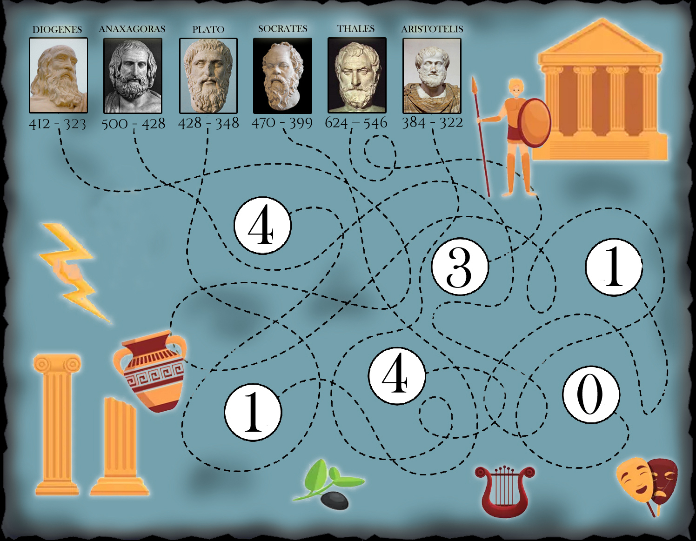

624 – 546 - Filosof presocratic din Milet.
500 – 428 - Filosof presocratic din Clazomenae.
470 – 399 - Filosoful clasic grec care a băut otravă .
428 – 348 - Elev al lui Socrate și profesor al lui Aristotel, celebru pentru Dialoguri.
412 – 323 - Filosof celebru pentru "butoiul" său.
384 – 322 - Elev al lui Plato.